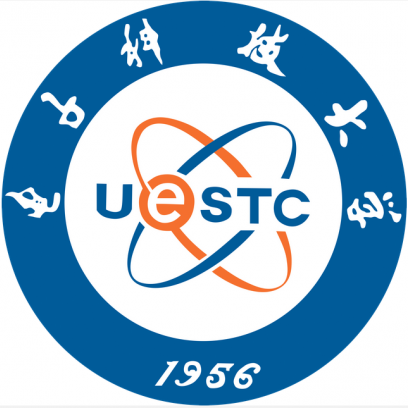
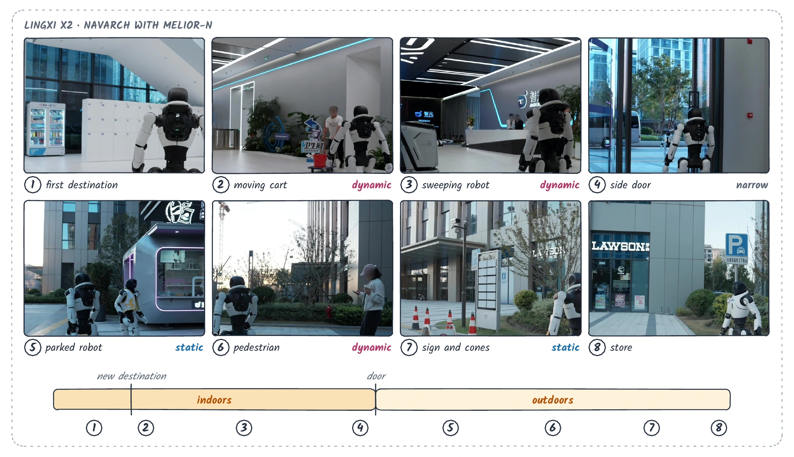
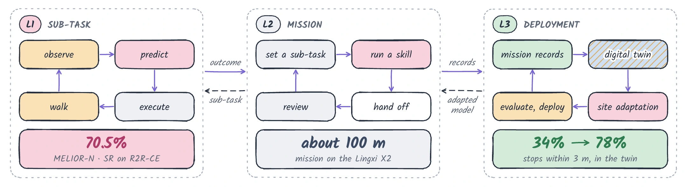
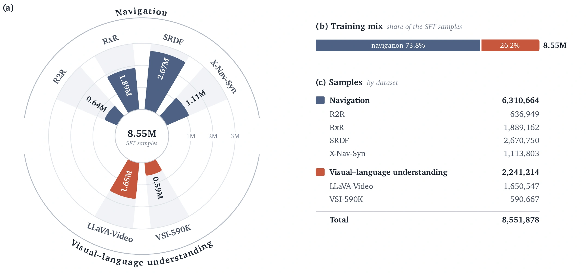
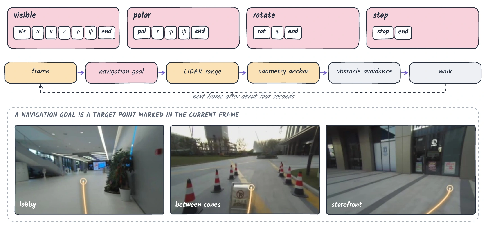
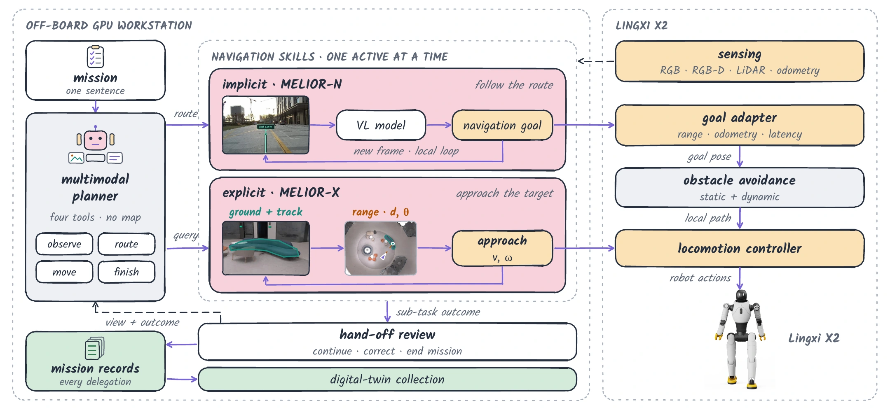
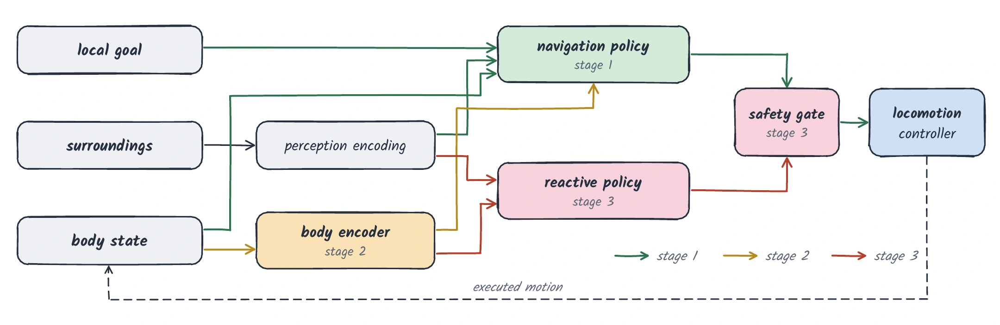

数据引擎
三类数据，各回答一个问题
开源场景提供约 631 万个步级导航样本。部署场地的数字孪生让模型学习在走偏后回到路线。真机采集则记录机载相机随步态产生的晃动和实际走过的距离。
* 同等贡献† 项目负责人✉ 通讯作者





跟随第三人称镜头，看灵犀 X2 接到新指令，穿过玻璃门，沿室外步道走到罗森店门口。

走出 9.1 米后，灵犀 X2 收到新目的地，转身穿过大堂和玻璃门，在路边等待车辆与行人，最后停在邻楼的便利店门口。3 分 24 秒内，里程计累计记录 96.6 米。
查看高清原图
在另一次实机运行中，X-Navarch 把改道指令拆成子任务，交给 MELIOR-N 执行。机器人应对了三个动态障碍、两个静态障碍和两处狭窄通道。它为行人让路，也穿过了标牌与锥桶之间的空隙。
查看高清原图开源场景提供约 631 万个步级导航样本。部署场地的数字孪生让模型学习在走偏后回到路线。真机采集则记录机载相机随步态产生的晃动和实际走过的距离。
两种模型都接收语言指令与内置相机的 RGB 图像。MELIOR-A 预测前进、转向或停止等动作。MELIOR-N 输出一个局部导航目标，供机器人执行。
规划器拆解指令，在停步时复核进度。MELIOR 负责沿路行走，MELIOR-X 负责最后几米的目标接近。避障层协调通行，目标接近与底层控制还使用激光雷达和里程计。

上排记录灵犀 X2 在 X-Navarch 与 MELIOR-N 引导下从大堂走到邻楼便利店的实机任务。下排串起训练数据的三个来源、MELIOR 的两种输出，以及把导航决策交给机器人执行的流程。
查看高清原图
执行子任务时，机器人反复观察、预测和行走。任务规划器在每次交接时复核进度。部署时，团队在场地数字孪生中采集纠偏样本并评估适配后的模型，再回到真机验证。
查看高清原图
X-Nav-Syn 在多种室内场景生成约 111 万个步级样本，加入 R2R、RxR 和 SRDF 的回放后约为 631 万个。X-Nav-Twin 保留部署场地的布局，X-Nav-Real 记录灵犀 X2 自身的视野与实际运动。
查看高清原图
X-Nav-Syn 先挑选能到达、能看见目标且留有停靠空间的位置，再用 A* 在占用栅格上规划路线。回放同一条路线得到 RGB-D 图像、相机位姿、指令及配对的动作和目标标签。
查看高清原图
左右两例分别展示找目标和按路线行走的指令、路径与第一视角。中间的餐桌示例对比了固定终点和四个通过筛选的终点位姿。机器人可以从不同方向看到同一目标。
查看高清原图
MELIOR-N 的监督微调使用约 855 万个样本。四种导航数据合计占 73.8%，其余 26.2% 来自 LLaVA-Video 的视频理解和 VSI-590K 的空间推理样本。
查看高清原图
两个模型都读取指令和一台前向 RGB 相机的当前及历史画面。MELIOR-A 每次最多预测四个前进、转向或停止动作。MELIOR-N 每次选择一种指令模式，给出一个导航目标或要求转向、停止。
查看高清原图
MELIOR-N 可以指向画面中的像素、给出视野外的距离和方位，或要求原地转向和停止。执行可见目标时，机器人用激光雷达测距、用里程计保持目标位置，再通过避障层走向目标。
查看高清原图
图中以大堂孪生渲染和示意标注说明流程。MELIOR-X 核对目标、跟踪其图像掩膜，再用掩膜内的激光雷达点估计距离和方向。靠近目标时，它切换到朝下的 RGB-D 相机。
查看高清原图
规划器拆解任务并在技能交接时复核结果。MELIOR-N 负责跟随路线，MELIOR-X 负责接近指定目标。真机将导航目标转换为目标位姿，经避障层交给行走控制器。
查看高清原图R2R-CE · RxR-CE · X-Nav-Twin
在一处办公大堂的数字孪生中，MELIOR-A 执行了 100 个留出的导航回合，目标都是自动售货机。下图是最终位置距目标 3 米以内的回合占比。
把成功半径收紧至 1 米时，成功率从 28% 降至 20%。

团队在扫描重建的大堂中规划了 500 个任务。加入偏航恢复和停止时机样本后，在 100 个留出回合中，终点距目标 3 米以内的比例由 40% 升至 80%，同时预测停止的比例由 34% 升至 78%。
查看高清原图
在大堂孪生中完成适配后，MELIOR-A 驱动真实的灵犀 X2 穿过开阔地面、经过储物柜，抵达自动售货机。最后一帧拍摄于起步后 38 秒。
查看高清原图两版 MELIOR 均通过单个前向 RGB 相机按指令导航。下表为两项基准在 val-unseen 划分上的成功率。
| 模型 | R2R-CE | RxR-CE |
|---|---|---|
| MELIOR-A | 66.1% | 64.3% |
| MELIOR-N | 70.5% | 60.9% |
MELIOR-A 每次决策最多预测四个动作。MELIOR-N 每次决策预测一个导航目标。

图中比较了两版 MELIOR 与三种使用单路前向 RGB 的方法。在 R2R-CE 的 val-unseen 划分上，MELIOR-A 和 MELIOR-N 的成功率分别为 66.1% 和 70.5%。在 RxR-CE 上分别为 64.3% 和 60.9%。
查看高清原图
团队计划在局部导航目标与行走控制器之间加入可学习的策略。先训练共享导航策略，再用身体编码器适配不同机型，最后加入带安全检查的动态避障策略。
查看高清原图arXiv · cs.RO · 2026
@misc{huang2026xnav,
title = {{X-Nav Technical Report: Real-World Long-Horizon Indoor-to-Outdoor Navigation on a Humanoid Robot}},
author = {Jiaxin Huang and Chengxing Lin and Xiaoyu Luo and Sirui Chen and
Jingyu Guo and Aolin Li and Kairui Chen and Rui Zhen
and Cheng Wen and Kerui Gu and Shunyao Wang and Zhihui
Peng and Shaoli Huang},
year = {2026},
eprint = {2611.17598},
archivePrefix = {arXiv},
primaryClass = {cs.RO},
doi = {10.48550/arXiv.2611.17598},
url = {https://arxiv.org/abs/2611.17598}
}技术报告及论文插图由 Jiaxin Huang 等人创作，采用 CC BY 4.0 许可。